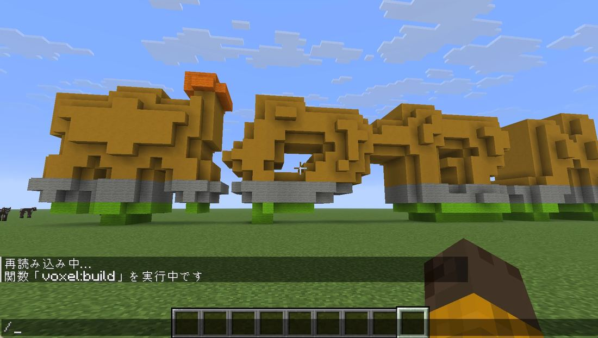
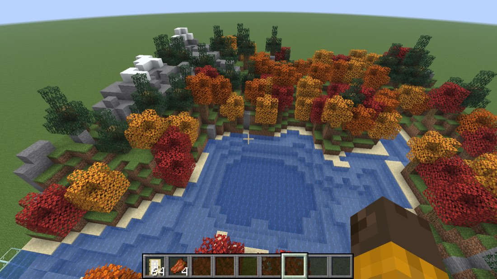
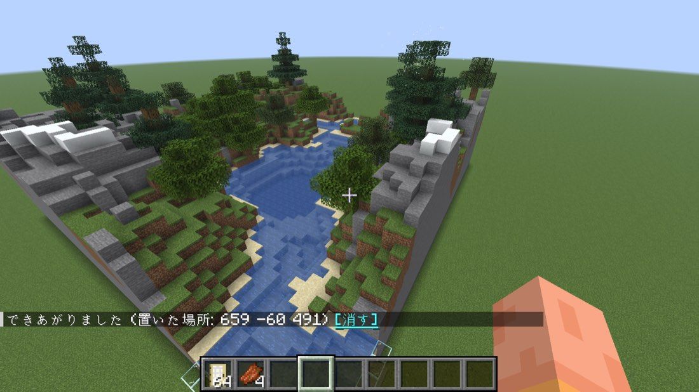

マインクラフトで試してみた
ボクセル工房で作った立体を、本物のマインクラフトに置いて確かめた記録です。うまくいったことも、見つけた問題も、そのまま書いています。
試した環境
- マインクラフトJava版26.3の、ひとりで遊ぶモードです。
- 平らな地面だけのワールド (スーパーフラット) に置きました。
- 試した日は2026-11-14〜21です。
- 置き方は「マインクラフトに置く」のページのとおりです。
試した記録
8つの記録を、それぞれ別のページに分けています。
-
 1. 風景を置いてみた 「山と湖・夏」の風景を、上から・横から・角から・夕方の4つの見え方で確かめた記録です。 写真4枚
1. 風景を置いてみた 「山と湖・夏」の風景を、上から・横から・角から・夕方の4つの見え方で確かめた記録です。 写真4枚 -

2. 文字を置いてみた 文字の立体を置いて、読める向きと色の出方を確かめた記録です。 写真1枚 -
 3. 少しずつ置いてみた (
3. 少しずつ置いてみた (voxel:build_slow) 大きな風景を建てる係 (アレイ) つきで下の段から少しずつ置いた記録と、空中で置いたときの水漏れを直した記録です。 写真6枚 -
 4. 少しずつ壊してみた (
4. 少しずつ壊してみた (voxel:break_slow) 置いた大きな風景を、壊す係つきで上の段から爆発させながら少しずつ消した記録です。 写真3枚 -

5. 秋の風景を置いてみた 「山と湖・秋」の風景を置き、石の山のように見えた秋の葉を、ポプラの葉に替えて葉らしく見せた記録です。 写真4枚 -
 6. 春のサクラを置いてみた 新しく足した季節「春」の風景を置き、サクラの枝を、ゲームのサクラと同じ階段の形に直した記録です。 写真4枚
6. 春のサクラを置いてみた 新しく足した季節「春」の風景を置き、サクラの枝を、ゲームのサクラと同じ階段の形に直した記録です。 写真4枚 -

7. ゲームと同じ形の木を置いてみた 風景の木を、オーク・シラカバ・トウヒ・ポプラなど、マインクラフトの木と同じ形と大きさにして置いた記録です。 写真4枚 -
 8. 山の上から水を流してみた 風景の高い山のてっぺんに水を置き、滝になって湖へ流れる様子や、くぼみにできた池を確かめた記録です。 写真5枚
8. 山の上から水を流してみた 風景の高い山のてっぺんに水を置き、滝になって湖へ流れる様子や、くぼみにできた池を確かめた記録です。 写真5枚
見つけて直したこと
| 見つけたこと | 直し方 |
|---|---|
| 木の幹の下の草が、時間がたつと土に変わった | はじめから土を置くようにした |
| 文字の色分けに、灰色がまじった | 近い色の選び方を、人の目の感じ方に近い方法に変えた |
| 空を飛んだ状態で風景を置くと、1段目の砂が落ちてふちの水も下から漏れた | 1段目の砂を石にし、ふちのガラスの下端にも石を置くようにして、空中で置いても漏れないことを確かめた |
| 壊す係が出たあと、建物の前で動かずに止まった | 爆発の音の指定の誤り (blocks → block) を直し、飛び回りながら壊せることを確かめた |
| コマンドの入力候補に、内部用の段階ファイルが1,000個以上並んで選びにくかった | 内部用のファイルを voxel:slow/ の下に移し、/function voxel:b で使うコマンドだけが出るようにした |
| 秋の木の葉が、つるっとした色のブロックで、石の山のように見えた | Java版26.3で加わった赤・オレンジ・黄色のポプラの葉に替え、葉らしく透けて見えることを確かめた |
| 春のサクラの枝が、縦の木目のままだったり、まっすぐな幹の途中に年輪の面が見えたりした | ゲームのサクラを生やして形を見比べ、枝を「横に1マス」か「上に1マス」で伸ばす階段の形にした |
| とがった木が、丸い木より小さく見えた | 本物のトウヒとマツの形と大きさに合わせ、丸い木との高さのつり合いがとれることを確かめた |
| 山の上から流した水の1本が、湖に届かずに斜面の途中のくぼみで止まった | 流れた先がくぼみのときは、ふちの高さまで水を満たして池にした |
| 風景を消したとき、流れた水が空中に柱のように残り、ゆっくり消えた | 一気に消すときと [消す] では、先に風景の範囲の水をすべて消すようにした |
試すときのこつ
- 空を飛ぶと、上から全体を見られます。クリエイティブモードで、スペースのキーを2回すばやく押します。下がるときは左の
shiftキーを押します。 - 写真は、マインクラフトのスクリーンショットの機能で撮りました。ノート型のMacでは、はじめのキー (F2) がそのままでは効きませんでした。マインクラフトの「キー割り当て」で、別のキーに変えると撮れました。
これから試すこと
- 歩きやすい設定 (なだらかな丘、横128マス、山を低め) で置いて、歩いてみる。
- 風景を少し下にずらして置き、まわりの壁を低くする。
- 色の選び方を直したあとの文字を置く。
- 冬の風景、島と丘の地形を置く。
ページの一覧
- ボクセル工房文字・画像・風景を、ブロックの立体にする道具です。
- てびき使い方と、できること・できないことの説明です。
- マインクラフトに置く作った立体を、マインクラフトのワールドに置く手順です。
このサイトではアクセス解析にGoogleアナリティクスとクッキーを使っています (くわしく)。